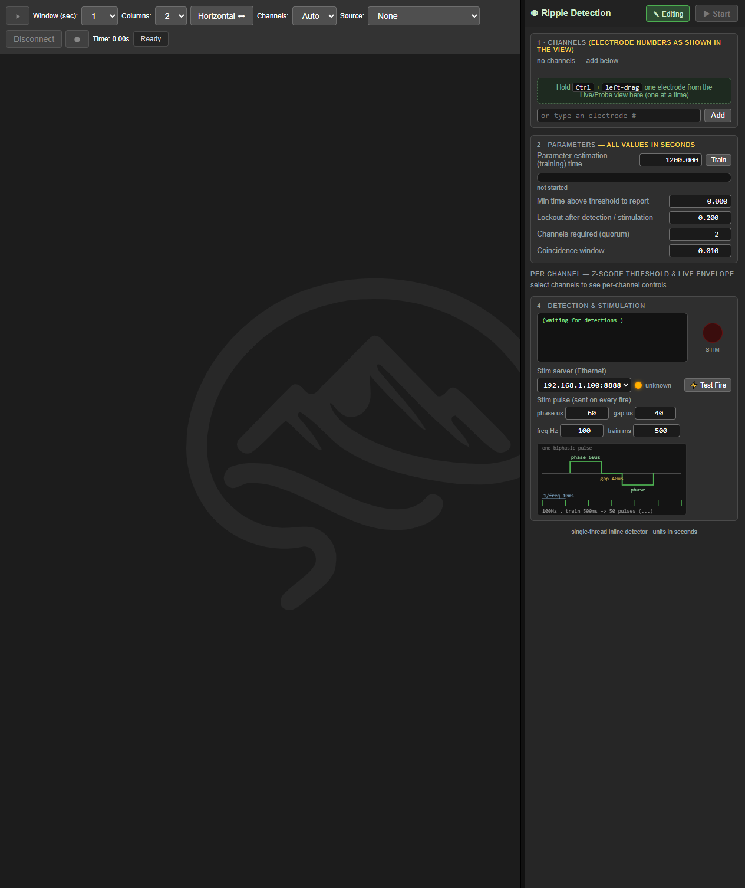

Ripple-detection GUI — design, WS contract, and integration plan#
The RippleDetection panel is a right-side dock column (≤ ¼ width, stretchable) that coexists with the
Probe Map / Live Data views (a toolbar tab toggles the dock; it does not replace the main view). It drives
proc.rippledetector and visualises its per-channel state.
Scope — this doc is the GUI ↔ backend WS contract only. How to operate the dock (with annotated screenshots):
../user_docs/RippleDetection.md. The detection algorithm + per-probe data path:RippleDetection.md. This doc does not repeat either.
Status: BUILT + WIRED END-TO-END (2026-07-08). The frontend panel (webinterface/RippleModule.js) sends WS
commands and renders live backend events; the backend RippleDetector emits rippleEnvelope/rippleTraining/
rippleBaseline/rippleDetected/rippleState, and applies frontend commands (start/pause/setChannels/setParam/
setZ/retrain/enable) at runtime (queued onto its worker thread, applied safely between loop iterations).
Verified: a WS listener saw 649 envelope + 24 training + 2 baseline + 5 detection events over 26 s, and a
runtime setChannels [5,15] was resolved + took effect live (detections then fired on [5,15]). The layout
shrinks the main view (no overlap); two spinboxes added: quorum count + coincidence window (10 ms
default, ±0.001). Start/Pause + Edit-lock verified headless (2026-07-08): Play auto-started (enabled=true,
3 channels trained), pause→enabled=false (0 detections while paused), setChannels[0,10,20,30] while paused
merged to 4 channels, start→resume trained ONLY the new e30 (e0/e10/e20 kept their baselines), 7 detections
total, no crash across the runtime channel-set mutations. Ctrl+drag channel selection is DONE: a shared RippleModule.beginElectrodeDrag
custom-drag (works over the WebGL probe canvas AND the live-view DOM labels, unlike HTML5 DnD) — the probe view
hooks it on Ctrl+mousedown via electrodeUnderCursor/np2ElectrodeUnderCursor (NP2 → global
shank*1280+e); the live view hooks it on the electrode labels (Ctrl+mousedown, normal Ctrl-click select
skipped). Verified headless: drop-on-dock → addElectrode (chip + per-channel column appear). Remaining: the
stim-server IP backend (selector present; wire it to StimulatorClient).
1. Layout (top → bottom, per the spec)#
- Header: a single
▶ Start/⏸ Pausebutton (consolidates the old Enable+Begin) + an✎ Editbutton. Semantics: - Start — begins the module: first-ever Start trains μ/σ from now, then detects; a Start after a Pause just resumes with the existing baselines (no retrain). Disabled with no channels selected.
- Pause — stops detection + stimulation (envelopes keep streaming, so the panel stays live); baselines kept.
- Edit — only enabled while paused; unlocks the config (channels + global params) for changes. While
running, channels + global params are locked — EXCEPT the per-channel z-score, which stays editable
live for real-time sensitivity tuning (
setZrecomputes the threshold on the fly). Start re-locks the rest. (Backend is the source of truth:rippleState.enableddrives the button + lock.) - Row 1 — Channels: electrode chips (
e50 → ch98 ✕). Editable when paused + Edit engaged. Add by left-drag an electrode from the Live Data / Probe view into the dropzone — hold Ctrl, OR just drag while the dock is open (body.ripple-openskips the Ctrl requirement) — one at a time, or type an electrode number (fallback). Removing a chip drops that channel. Adding a channel to an already-trained set trains only the new channel (kept channels keep their baselines) — seesetChannelsbelow. - Row 2 — Parameters (global, before the per-channel split; all seconds):
Parameter-estimation (training) time— line edit, default 1200.000 s, validated. A Train / Retrain button reads Train until every channel is trained then Retrain (disabled with no channels, mid-train, or when not running); a progress bar + "time remaining" while training μ/σ.Min time above threshold to report— line edit, default 0.000 s.Lockout after detection / stimulation— spinbox, default 0.200 s, step 0.01.Channels required (quorum)+Coincidence window(default 0.010 s).- Rows 2–3 — per-channel columns (one per selected channel):
z-scorespinbox (default 3.00, step 0.01, live-editable even while running), the threshold μ + zσ = value (Greek), a rolling envelope plot (last 500 ms, trimmed by timestamp) with the threshold as a dashed line; the column highlights for the lockout on a crossing. Status line: idle — press ▶ Start (added, not running) / training… / below threshold / ● RIPPLE. - Row 4 (no split): a cowsay "ripple detected" readout, a red stimulation LED lit for the lockout, and a stim-server Ethernet IP selector + a clickable arm/disarm toggle (the small stim LED, see below).
2. Frontend → backend (WS JSON, sendCommand({command:"ripple", …}, 0x1000))#
| action | payload | backend effect |
|---|---|---|
start |
{} |
run the module: first-ever start trains from now + detects; a start after a pause resumes (baselines kept). Sets mEnabled=true, mTrainingOrigin if unset |
pause |
{} |
stop detection + stimulation (envelopes still stream; baselines kept). Sets mEnabled=false |
enable |
{enabled:bool} |
legacy bool toggle (maps to start/pause) |
setChannels |
{electrodes:[int]} |
set detection electrodes (resolved via ChannelMapService). Merge / train-only-new: electrodes that persist keep their trained baseline + filter/lockout state; new electrodes get fresh untrained detectors; dropped electrodes are discarded |
setParam |
{name, value:float} |
estimation_seconds / min_duration_seconds / lockout_seconds / coincidence_window_seconds / quorum_count |
setZ |
{electrode:int, z:float} |
per-channel z-score threshold |
retrain |
{} |
clear baselines and re-estimate μ/σ |
setStimServer |
{ip:string} |
set the StimulatorClient target IP |
setStimParams |
{phase_us,gap_us,freq_hz,total_ms} |
GUI-editable biphasic pulse-train params, applied to every fire (StimulatorClient::setStimParams, clamped to hardware ranges). Inputs fire on change, not input. |
testFire |
{} |
manual single pulse: connect() (arm) + fire(), no detection needed (⚡ Test Fire button) |
armStim / disarmStim |
{} |
arm / disarm the stim server (the clickable stim LED toggle, "connect/disconnect the Pi"). NOT routed through slApplyCommand — the WebSocketServer calls RippleDetector::setStimArmed(bool) directly on the main thread, which uses StimulatorClient::armFromAnyThread() / disarmFromAnyThread() (throwaway socket, status set under a lock) and broadcasts rippleStimStatus immediately. So it works even when NOT streaming (unlike the worker-thread commands). |
3. Backend → frontend (WS JSON events, broadcastJson)#
event |
fields | frontend render |
|---|---|---|
rippleState |
{enabled, channels:[{electrode, channel, z, trained, mu?, sigma?, threshold?}], estimation_seconds, min_duration_seconds, lockout_seconds, quorum_count, coincidence_window_seconds, stim_server, stim_status, stim_phase_us, stim_gap_us, stim_freq_hz, stim_total_ms} |
full panel sync (on connect / after a command) |
rippleTraining |
{active:bool, percent:0..100, remaining_seconds} |
progress bar + label |
rippleBaseline |
{electrode, mu, sigma, threshold} |
the μ + zσ = … per column |
rippleEnvelope |
{ts, values:{electrode:envValue}} (throttled, ~30–60 Hz) |
append to each column's rolling plot |
rippleDetected |
{ts, electrode(s), quorum:"k/N"} |
cowsay + LED + highlight the column(s) for the lockout |
RULE: rippleState must carry EVERYTHING the dock displays (2026-07-20)#
rippleState is the only mechanism that keeps a browser panel in sync with a detector that was driven
from somewhere else — the control CLI, ripple_tools/rig.py, or a second browser tab. Any value the
panel renders but the snapshot omits will silently show a stale default while the backend runs something
different.
This bit us during the NP1.0 regression: the whole 3-test run was driven over WS by rig.py, and the dock
kept showing freq 100 Hz and z 3.00 while the detector was really firing at 1 Hz with z 2.50.
The channel chips updated (they were in the snapshot); the numbers did not (they were not). See
captured by CDP screenshot at the time (screenshots are transient — see the screenshot policy in README.md).
The fix made rippleStateJson() a member function of RippleDetector (it needs mDetectionParams and the
StimulatorClient) reporting per-channel z / trained / mu / sigma / threshold plus the four stim
pulse-train fields, and RippleModule.onState() applies them with the backend as the authority.
Untrained channels send no mu/sigma/threshold at all so the panel renders -- rather than a stale
number or a misleading 0.
When you add a control to the dock, add its value to rippleStateJson() in the same commit. Verify with
ripple_tools/verify_sidecar_and_guisync.py, which sets values over WS only and then reads the rendered
DOM back through CDP — never by clicking the control it is supposed to be testing.
4. Backend wiring TODO (turn-key next step)#
proc.rippledetector runs on a worker thread and today only prints the cowsay to stdout. To wire the contract:
1. Emit (additive, mirrors sigIpErrorOccurred): add IProcessor/RippleDetector signals
sigRippleDetected(QString json), sigRippleBaseline(...), sigRippleTraining(...), sigRippleEnvelope(...).
Emit from doRippleDetectionLoop — detection at the fire() point; baseline where the threshold is computed;
training progress from mCurrRawDataInd / mBaselineGateSamples+duration; envelope throttled (~every Nth
decimated sample) to keep the WS light. Cross-thread → WebSocketServer via QueuedConnection.
2. Relay: in WebSocketServer::onSourceSelection, connect(rippleDetector, &sig…, this, broadcastJson-slot)
(UniqueConnection), like the recorder-error relay. Register the detector by name so it's reachable.
3. Commands: handle command:"ripple" in WebSocketServer::onTextMessageReceived → call detector setters
(marshalled to its thread via QMetaObject::invokeMethod, like RecordProcessor::setRecording). The setters
already exist for most params (mZScoreThreshold, mLockoutSeconds, mBaselineDurationSeconds,
mMinDurationSeconds, mDetectionElectrodes); add thin Q_INVOKABLE/slots + a re-resolve/retrain path.
4. Envelope source: the detector already fills mDataStoreEnvelope (per-channel envelope) — sample the
latest per channel for rippleEnvelope rather than adding new state.
5. Ctrl+drag source side: make electrodes draggable from ImroManager/ChartColumn when Ctrl is held
(SciChart pointer handlers) and set dataTransfer = the electrode number; the dock's dropzone already accepts.
5. Notes#
- The stim server "communicates via Ethernet" — the existing
StimulatorClient(UDP to an IP:port) maps to the IP selector; enumerate local NICs backend-side for the dropdown later. Stim module reintegration is separate. - The detector is single-thread by design (see
RippleDetectorThreading.md); the GUI does not change that.
Stim pulse preview (2026-07-14)#
Below the editable Stim pulse params (phase µs / gap µs / freq Hz / train ms) the ripple dock draws
a live schematic on #rd-pulse-canvas (RippleModule._drawPulse()), redrawn on every edit:
- top zone — one biphasic pulse, zoomed so the two phase lobes and the inter-phase gap are
always visible and labelled;
- bottom zone — the pulse train at real 1/freq spacing over the train window, with a 1/freq
period marker and a <freq>Hz · train <ms> → <N> pulses summary.
So editing any value updates both the pulse shape (phase/gap widths) and the spacing/count
(freq/train) immediately. Pure frontend — no rebuild; sync webinterface/RippleModule.js into the
build tree's webinterface/ (the backend serves that copy) and hard-reload the browser (it caches JS).

Clickable arm/disarm stim toggle (2026-07-16)#
The small stim-server LED in the Detection & stimulation card is a clickable toggle
(#rd-stim-toggle, a pill wrapping the LED + status text + a ⏻ power icon) that arms/disarms the Pi —
an intuitive "connect / disconnect from the Pi" control, so you don't have to tear the source down to stop
stimulation.
- Armed by default. The
RippleDetectorconstructor auto-arms;WebSocketServer::onSourceSelectionthen broadcasts the armed status so the pill shows green "armed" immediately on select (even before Play). - Click while armed →
disarmStim→ the Pi disarms and the pill goes grey. Detection keeps running, but a disarmed server ignoresfire(), so no pulse goes out until you re-arm. - Click while disarmed →
armStim→ the Pi re-arms and the pill goes green. - The click is optimistic — the frontend flips the LED/label on every click (so rapid arm/disarm alternate correctly), and the backend broadcasts the real status right back to confirm.
- Cowsay is short: "connected to stim server" / "disconnected from stim server".
Works WITHOUT streaming. armStim/disarmStim are NOT queued to the detector's worker thread (whose
event loop only runs on Play). The WebSocketServer calls RippleDetector::setStimArmed(bool) directly
on the main thread, which uses StimulatorClient::armFromAnyThread() / disarmFromAnyThread() — a
throwaway UDP socket, safe from any thread, no event loop needed — and sets the status under a QMutex
(mStatusMutex) so getStatus() (and the rippleState broadcast) reflect the change without waiting for
an ACK. (The status mutex also makes the play-time ACK path race-free.)
Files (all need a rebuild except the JS): StimulatorClient.{hpp,cpp} (armFromAnyThread, status
mutex/setStatusSafe), RippleDetector.{hpp,cpp} (setStimArmed), WebSocketServer.cpp (route
arm/disarm to setStimArmed on the main thread + broadcast armed-by-default on select), RippleModule.js
(.rd-stim-toggle CSS, button markup, _isStimArmed(), _syncStimLed(), optimistic click binding).
Verified on the live Pi 3B+ without streaming: 6/6 clicks alternated reliably — journal Device ARMED
/ Device DISARMED per click, pill green/grey, short cowsay (verified by CDP screenshot).